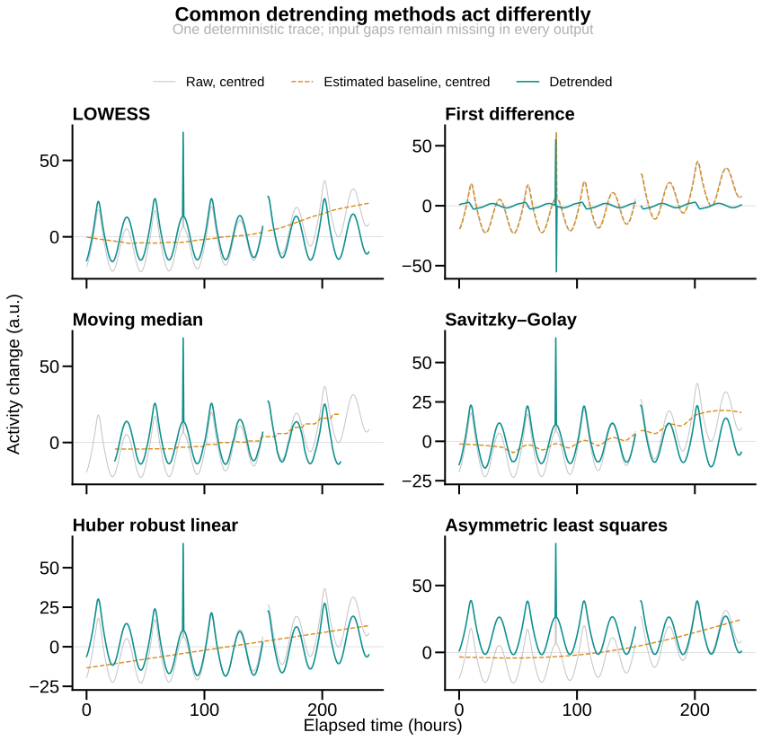

Choose a detrending method¶
Detrending removes a slow background from a trace before period estimation. Think of it as levelling a sloping table before measuring the height of the objects on it: the correction should remove the slope without shaving down the objects.
Use the least invasive method that reveals the oscillation, inspect the raw,
baseline, and detrended traces together, and keep none when drift does not move
the answer. The registered action names this choice detrend_method; the friendly
Python method calls it method.
What the methods do¶

The grey trace is the centred input, orange is the estimated baseline, and teal is the output. The missing interval is never converted to zero. The figure is generated by the package's real detrending implementation; its audited private bundle retains the exact plotted values and standalone producer.
| Method | Use it when | Main controls | Important consequence |
|---|---|---|---|
none |
Drift is negligible or does not change the period | none | Preserves the source exactly. |
linear |
The baseline is approximately a straight ramp | none | Ordinary least squares can be pulled by isolated outliers. |
robust_linear (huber, robust) |
The baseline is a ramp with occasional outliers | none | Fits one Huber-weighted line; it cannot follow curvature. |
first_difference (diff, difference) |
A step-to-step change series is scientifically intended | none | Returns x[t] - x[t-1]; changes amplitude and phase response and loses the first sample. |
running_mean (moving_average) |
A centred, easily interpreted local baseline is wanted | window_hours, min_valid_fraction |
Drops half a window at each edge; a 24-hour window largely preserves a 24-hour sinusoid. |
moving_median (median, running_median) |
Short spikes should not pull the local baseline | window_hours, min_valid_fraction |
Drops half a window at each edge and can make the baseline step-like. |
kernel (baseline) |
Matching BioDare2 Gaussian-baseline detrending | window_hours, bandwidth_hours, min_valid_fraction |
Drops half a window at each edge and can absorb rhythmic amplitude. |
lowess (loess) |
The baseline is smooth and curved without a useful global equation | window_hours or lowess_fraction; lowess_iterations |
Local linear fits can follow the rhythm if their neighbourhood is too short. |
savitzky_golay (savgol) |
A smooth local-polynomial baseline should retain broad shape | window_hours, polynomial_degree |
Edge values are locally extrapolated; gaps are used only as internal fit interpolation and remain missing in output. |
polynomial (cubic, poly3, poly6) |
One global polynomial describes the drift | polynomial_degree |
High degrees can oscillate at the edges; named aliases force their stated degree. |
amp_baseline (amp&baseline) |
Both baseline drift and progressive amplitude damping must be removed | window_hours, bandwidth_hours, min_valid_fraction |
Rescales amplitude and has strong edge artefacts. |
asymmetric_least_squares (asls, als) |
Positive peaks sit above a smooth lower envelope | asls_smoothness, asls_asymmetry, asls_iterations |
One-sided by design; do not treat it as a neutral baseline for a symmetric waveform. |
frequency |
Components slower than a declared cut-off should be removed | low_cut_hours, high_cut_hours, filter_order |
Changes waveform shape and has filter transients near both ends. |
Run one method¶
import circadian_workbench as cw
trace = cw.open("mouse01.awd")
result = trace.detrend(method="lowess", window_hours=72)
result.show()
The direct action accepts file, inline, demo, and array-backed recording inputs:
cw.call(
"detrend",
recording={"path": "mouse01.awd"},
detrend_method="asymmetric_least_squares",
asls_smoothness=1_000_000,
asls_asymmetry=0.01,
asls_iterations=10,
)
Controls shared by several methods¶
| Parameter | Default | Meaning |
|---|---|---|
window_hours |
24.0 |
Biological duration of a centred local window. For LOWESS, it determines the sample fraction when lowess_fraction is omitted. |
polynomial_degree |
3 |
Global polynomial degree, or the local degree for Savitzky–Golay. |
min_valid_fraction |
0.5 |
Minimum finite share required in running, median, and kernel windows. |
bandwidth_hours |
null |
Gaussian standard deviation for kernel methods; null uses one quarter of window_hours. |
low_cut_hours |
45.0 |
Longest period retained by frequency filtering. |
high_cut_hours |
4.0 |
Shortest period retained by frequency filtering. |
filter_order |
2 |
Butterworth filter order before forward-and-reverse application. |
lowess_fraction |
null |
Fraction of finite samples used by each LOWESS fit; null derives it from window_hours. |
lowess_iterations |
3 |
Robust residual-reweighting passes after the initial LOWESS fit; 0 disables them. |
asls_smoothness |
1000000.0 |
Curvature penalty for asymmetric least squares; larger makes a smoother baseline. |
asls_asymmetry |
0.01 |
Weight for points above the asymmetric baseline; smaller values exclude positive peaks more strongly. |
asls_iterations |
10 |
Asymmetric reweighting passes, from 1 to 100. |
smooth_window_hours |
0.0 |
Optional centred smoothing after detrending; zero disables it. |
exclude_hours |
null |
Optional leading duration excluded before the damping fit. |
The complete action reference also documents recording, config, accepted
types, units, and returned fields: detrend action.
Use a detrender during period estimation¶
Set period_detrend to any method or alias above. Every requested period
estimator then receives the same detrended series.
period = cw.open(
"mouse01.awd",
settings={
"period_detrend": "moving_median",
"period_detrend_window_hours": 48,
},
).period(method="lomb")
The corresponding period_detrend_* settings are listed in the
complete configuration reference.
Choosing safely¶
- Run
nonefirst and record whether drift actually changes the period. - Start with
linearfor a ramp orrunning_meanfor a slow local background. - Use robust linear or moving median when isolated spikes dominate the fit.
- Use LOWESS or Savitzky–Golay only with a neighbourhood longer than the feature you need to retain.
- Reserve first differences and asymmetric least squares for questions whose data-generating assumptions match those transformations.
- Compare the raw and detrended spectra; a new peak created only by one aggressive detrender is not evidence of a biological rhythm.
Detrending does not establish rhythmicity. Pair a period estimate with a method that supplies a significance test, such as the Lomb–Scargle false-alarm probability.